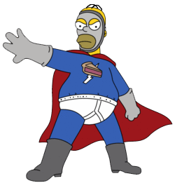

Capitulo 2: ¿Eres π-curioso?
Las bromas introducidas por Reiss, Jean y sus colegas incorporan conceptos matemáticos que serán familiares
a muchos espectadores. Un ejemplo clásico es el número π, que ha hecho varias apariciones estelares en la
serie a lo largo de las últimas dos décadas, por si se han olvidado, el número π es simplemente la
proporción de la longitud de la circunferencia con respecto a su diámetro.
circunferencia, y luego cortando un trozo de cuerda de modo que sea tan largo como el diámetro de esa
circunferencia para recorrer toda la circunferencia, esa cuerda deberá aplicarse un poco más de tres veces,
3,14 veces, para ser más precisos. Ese es el valor aproximado de π.
La relación entre π y la circunferencia y el diámetro de una circunferencia se resume en la siguiente
ecuación: longitud de la circunferencia = π × diámetro: L= πd
Como el diámetro de una circunferencia es el doble de la longitud del radio, la ecuación se puede expresar
también de la siguiente manera: longitud de la circunferencia = 2 × π × radio: L= 2πr.Todas las
circunferencias del mundo obedecían a la relación con π, desde las norias hasta los frisby, desde los
chapatis hasta el ecuador de la tierra. Y así como para hallar la longitud de la circunferencia, π se puede
usar también para calcular el área dentro de la circunferencia.
Hay una broma que se refiere a esta ecuación en particular en el episodio, en ese episodio, Homero se
disfraza de un superhéroe llamado Simón, el simpático pastel man del barrio, y castiga a los malvados
arrojándoles pasteles a la cara. El primer acto de super heroísmo del Pastelman es vengarse de alguien que
acosa a Lisa. Tres años antes de la aparición del gag de la letra π , los guionistas de Los Simpson habían
incluido otra referencia a π en el episodio. En esta ocasión, en lugar de resucitar un chiste antiguo, los
guionistas crearon una nueva broma genuina, basada en un curioso incidente de la historia de π. Para
apreciar esta broma es necesario que recordemos el valor de π y cómo se ha ido midiendo a lo largo de los
siglos. Quedó claro muy pronto que π = 3,14 es solo una aproximación. Y esto se debe a que π es lo que se
conoce como un número irracional, es decir, resulta imposible especificar su valor con total perfección
porque sus decimales continúan hasta el infinito sin seguir patrón alguno.
La trama del episodio se centra en el acoso hacia los nerds, que sigue siendo un problema mundial, a pesar
de las sabias palabras del educador americano Charles J. Sykes, quien escribió en 1995: “Sed amables con los
nerds. Existen muchas posibilidades de que acabéis trabajando para uno de ellos”. Cuando Lisa intenta
explicarse por qué los matones no pueden resistir la tentación de acosar a los nerds, sospecha que los nerds
emiten un olor determinado que los marca como víctimas. Convence a uno de los amigos más nerds de su colegio
para que sude, recoge su sudor y lo analiza. Después de mucho investigar, al final aísla la feromona
emitida, que podría ser la responsable de atraer a los matones.
La llama feromona “poindextrosa”, Para probar su hipótesis, frota con un poco de poindextrosa la chaqueta
del formidable ex boxeador Drederick Tatum, que está visitando su colegio. Y efectivamente, la feromona
atrae a Nelson Muntz, el matón del colegio. Aunque Nelson sabe que es ridículo e inadecuado que un escolar
acose y ataque a un ex boxeador, no puede resistir la atracción de la poindextrosa e incluso intenta subirle
los calzoncillos a Tatum. Lisa ya tiene la prueba que necesitaba. Lisa decide presentar un trabajo (“Las
feromonas transmitidas aéreamente en la agresividad de los agresores”) en el 12º Gran Cosa Científica Anual.
La idea del profesor Frink funciona, porque se ha dado cuenta de que declarar que π tiene un valor exacto
dejaría asombrado y silencioso al público de geeks. Tras mil años de luchar por medir π con una precisión
increíble, ¿cómo se iba a atrever nadie a reemplazar: 3,14159265358979323846264338327950288419716939937510582097494459230
7816406286208998628034825342117067982148086513... por 3?.
La relación del diámetro con la longitud de la circunferencia es igual a π, de modo que Goodwin estaba
dictando en realidad un valor para π de acuerdo con la fórmula
